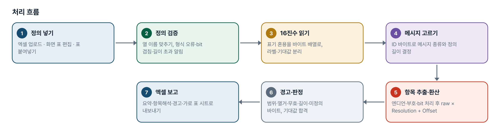
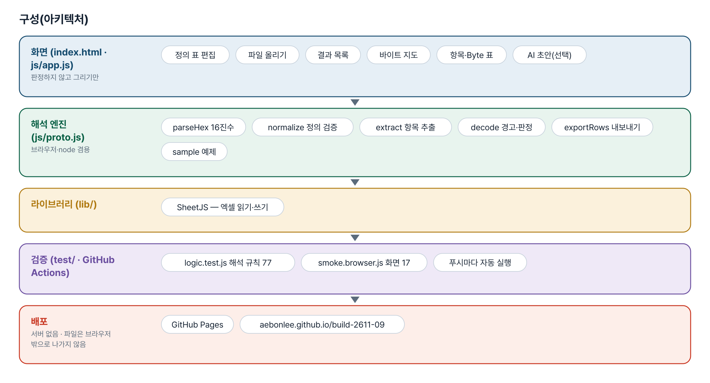
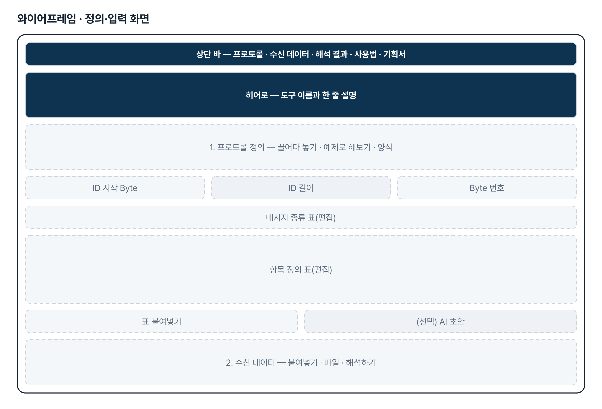
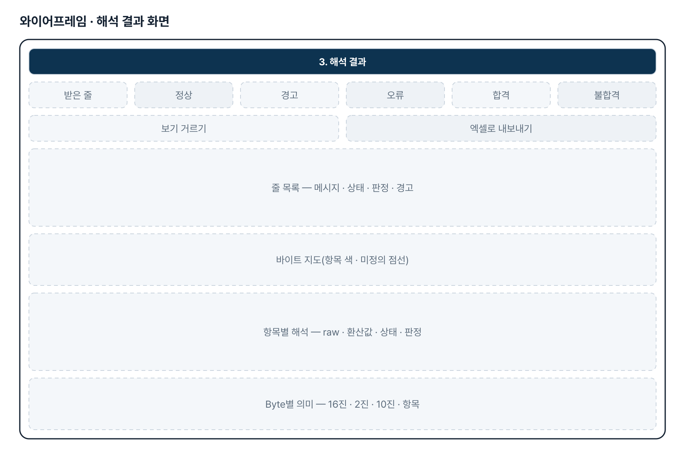
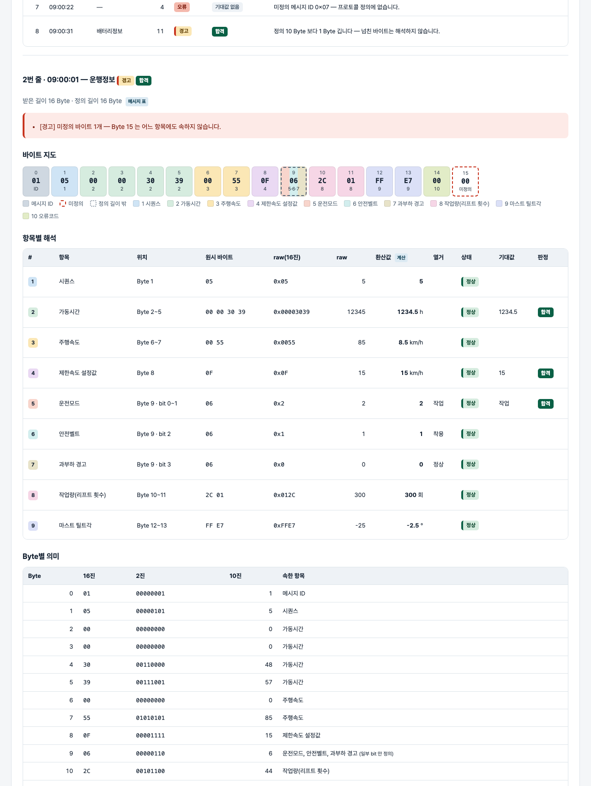

기획서 내려받기
파이프라인 · 아키텍처 · 와이어프레임 · 개발일지가 들어간 워드 문서입니다. 버전마다 따로 남깁니다.
| 버전 | 날짜 | 바뀐 점 | 파일 |
|---|---|---|---|
| v1.0 | 2026-11-02 | 첫 판 — 16진수 해석·환산·경고 7종·바이트 지도·기대값 판정·엑셀 내보내기 / 기획서 워드 판·파이프라인·아키텍처·와이어프레임 추가 | 워드 내려받기 |
| v2.0 | 2026-11-12 | 메뉴 4개 구조로 다시 만듦 — 대시보드 · 프로토콜 관리 · HCESPN 관리 · RAW DATA 해석 / 프로토콜 표 붙여넣기 등록 · 자동 검증 · 버전 보관 / HCESPN 정의(Type 6종 · 하위 필드 · 특수조건 · 사용자 정의 수식) · 원문 자동 구조화 / RAW DATA Viewer(Hover 해석 · 색 · 강조), Excel 일괄 분석 · 다운로드, 분석 이력 / v1.0 은 /v1/ 에 보관. 해석 규칙 테스트 72 · 화면 테스트 45 | 워드 내려받기 |
요구사항과 구현
| 기획서 요구 | 구현 |
|---|---|
| 메뉴 4개 — 대시보드 · 프로토콜 관리 · HCESPN 관리 · RAW DATA 해석 | 왼쪽 사이드바 4개 메뉴. 대시보드에 프로토콜 · HCESPN 현황, 미등록 HCESPN, 최근 분석 이력, 최근 수정 프로토콜 |
| 통신 주체(발신자 · 수신자) | 발신자 MCU · RMCU · 인증장치 + 직접 추가, 수신자 기본 Server |
| 프로토콜 표 복사 · 붙여넣기 등록 | 탭 구분(엑셀) · 마크다운 · 「S.P: …」 글 꼴을 읽어 S.P · Length · Parameter Name · HCESPN · 비고 추출 → 미리보기 표에서 수정 → 저장. 비고 열 없어도 됨 |
| 자동 검증 | 필수 열 누락 · S.P 겹침 · 빈 구간 · S.P 범위와 Length 불일치(고치지 않고 알림) · Message Type 자동 추출 · HCESPN 등록 여부 · 중복 등록 |
| Message Type 별 프로토콜 · 버전 · 누적 저장 | 발신자 + Message Type + 버전 단위로 저장. 「새 버전으로 저장」 시 이전 버전 보관, 이전 버전으로 재해석 |
| HCESPN 등록 — 원문 붙여넣기 → 자동 구조화 → 확인 → 저장 | 번호 · 이름 · Data Length · Byte 별 항목 · Resolution · Offset · 유효범위 · Endianness · 특수조건을 찾아 칸에 넣고, 확인 뒤 저장 |
| 환산식 유형 7가지 | 수치(그대로 · 선형) · 날짜/시간 · 열거 · 반복 배열(하위 필드) · 특수조건(Not available) · 사용자 정의 수식(RAW · RES · OFFSET, 사칙연산만 — 코드 실행 없음) + HEX 그대로 |
| RAW DATA 입력 — 직접 · Excel | 여러 줄 붙여넣기, Excel 3열(수신일자 · 수신 시간 · 메시지). 공백 · 줄바꿈 · 0x 제거, 대문자화, 잘못된 글자 위치 · 홀수 자릿수 알림 |
| 프로토콜 자동 선택 | 첫 Byte = Message Type 으로 검색. 여러 발신자에 있으면 발신자 선택 요청, 버전이 여럿이면 가장 높은 버전으로 풀고 선택 요청 |
| RAW DATA Viewer — Byte 별 Hover 해석 · 색상 구분 | Byte 마다 칸, Parameter 마다 색, 올리면 Byte 위치 · RAW · Parameter · HCESPN · 환산식 · 해석 결과 · 검증. 같은 값의 Byte 를 함께 강조 |
| 상세 해석 결과표 · Excel 다운로드 | Start Position · Length · Parameter Name · HCESPN · RAW HEX · Decimal · Physical · Unit · Status. 엑셀 2시트(메시지요약 · 해석결과)에 수신일자 · 발신자 · Type · 프로토콜 버전 · 오류 포함 |
| 오류 처리 8가지 | 미등록 Type · HCESPN 미등록(RAW 유지) · 길이 불일치(부분 해석 / 초과 Byte 보존) · 잘못된 HEX · 환산식 오류(원본 보존) · 특수조건 · 버전 불명확 · Excel 일부 행 오류 — 해석할 수 없으면 값을 만들지 않음 |
| 데이터베이스 영구 저장 · 이력 | 브라우저 저장(localStorage) + 백업 JSON. 분석 이력 500건(적용 프로토콜 · 버전 기록, 다시 해석). 서버 DB 는 이번 범위 밖 — 구조는 표 모양으로 맞춤 |
| 불명확하면 추정하지 않고 확인 요청 | S.P · Length 불일치, 특수조건 적용 범위, 버전은 자동으로 정하지 않고 「확인 필요」로 표시 |
그림으로 보기





개발일지
2026-11-13 · 마무리 — 로그인 · 게시판 · 첫 화면(판 2026-11-13.1)
- 과정 마무리 묶음을 붙임(마산 2차수 과제와 같은 키트) — 로그인 전 첫 화면(사진 3장 · 기능 · 사용 순서 · 기획서), 회원가입 → 사용 신청 → 관리자 승인, 게시판 · 새 글 알림, 내 정보, 관리(구성원 승인 · 첫 화면 모양)
- Supabase 표 · 함수 · 정책은 전부 build261109_ 로 시작(auth.sql · board.sql · site.sql). 과정용 프로젝트에 적용했고, supabase/README.md 순서대로 본인 프로젝트로 옮길 수 있음
- 도구의 계산 · 판정 · 저장 방식은 그대로(업무 자료는 지금처럼 브라우저 안에서만 처리). 기획서 · 사용법 쪽은 로그인 없이 읽음
- 내 PC(파일로 열기 · localhost)에서는 로그인을 건너뜀 — 주소 끝에 ?auth=1 을 붙이면 로그인 화면을 볼 수 있음
2026-11-12 · v2.0
- 패들릿 09 섹션의 11-12 「추가 수정 기획안」(워드)과 11-04 SRS v2.0 을 읽고 작업 지시서로 옮김
- 엔진 hcespn.js 를 새로 씀 — 기획서 인수 기준(60 · 날짜 · 31/71 bytes)을 node 에서 먼저 맞춤
- 기획서가 미확정으로 둔 것(S.P 8-51 과 24 bytes, HCESPN 128 Not Available 범위)은 자동으로 정하지 않고 알림으로
- 기술 구성은 React · FastAPI · PostgreSQL 대신 다른 2차수 과제와 같은 정적 페이지 + 브라우저 저장으로(기획서도 「실제 환경에 따라 변경 가능」)
- 해석 규칙 72 · 화면 45 통과, 엔진을 일부러 깨뜨려 실패하는지 확인
2026-11-02 · 첫 판
- 패들릿 build02 차준근 기획(게시물 4127020902)을 작업 지시서(CLAUDE.md)로 옮기고 구현
- 해석 엔진 proto.js — 16진수 읽기, 정의 검증, 엔디언·부호·bit 추출, 환산, 경고, 기대값 판정
- 화면 — 정의 표 편집·결과 목록·바이트 지도·항목·Byte 표·엑셀·AI 초안(선택)
- 해석 테스트 77 · 화면 테스트 17 통과, 배포